Fase 1: Cuentas, multiempresa y seguridad Inicio de sesión con RUT, segundo factor, estudios y empresas, roles y permisos, selector de empresa y periodo (Ctrl+K), auditoría, páginas legales y el estudio de ejemplo.
Recorrido en video Pantallas en orden de uso
1 Ingreso con RUT y clave. Prueba con el RUT 15.111.222-6 y la clave Demo1234 (Ana, contadora del demo).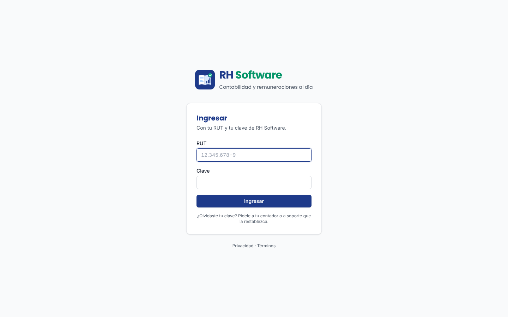
2 Estado de error: clave equivocada. El mensaje no revela si el RUT existe. Después de 5 intentos se bloquea 15 minutos.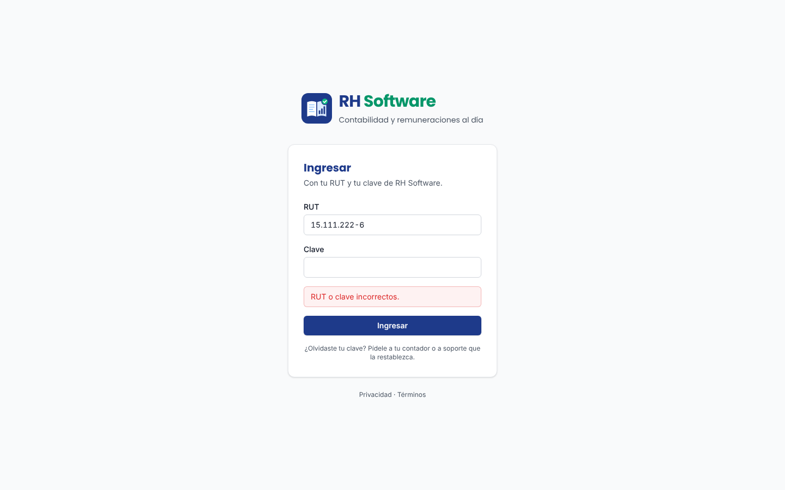
3 El RUT se valida con dígito verificador (módulo 11) antes de consultar.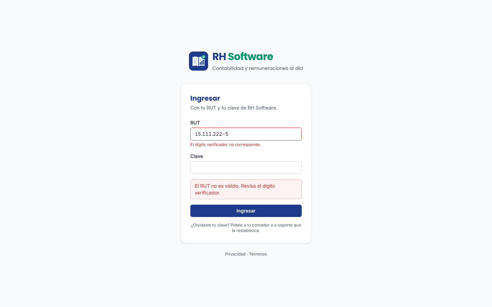
4 Al entrar, Ana ve el panel “Mi mes” con sus 3 empresas. El selector de empresa (arriba a la izquierda) y el periodo siempre están visibles.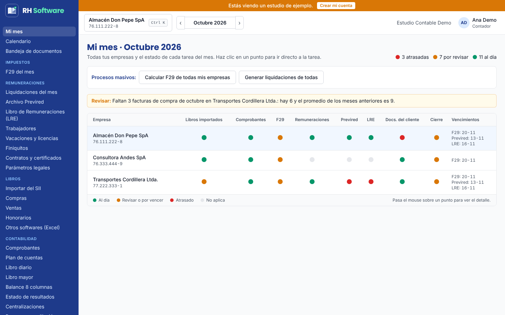
5 Ctrl+K abre el buscador de empresas: escribe parte del nombre o del RUT y Enter para cambiar en un segundo.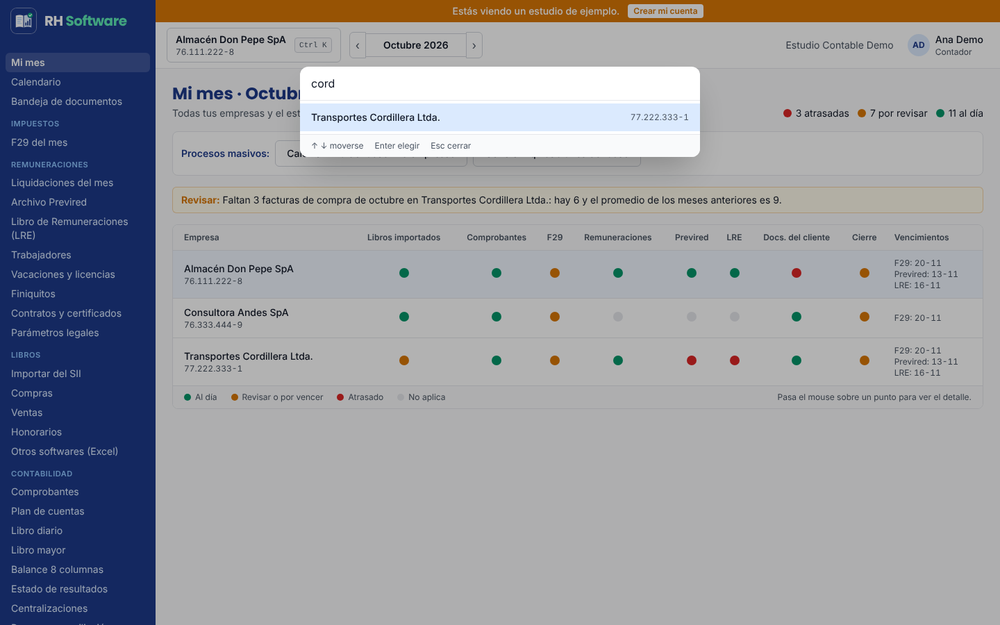
6 Empresas del estudio con su RUT, régimen y estado. Se pueden crear de a una o en lote desde Excel.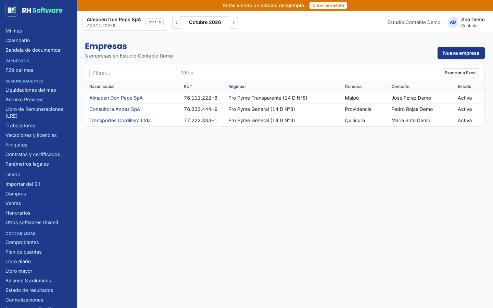
7 Ficha de la empresa: régimen tributario, PPM, mutual o ISL, caja de compensación, contacto de WhatsApp y correo.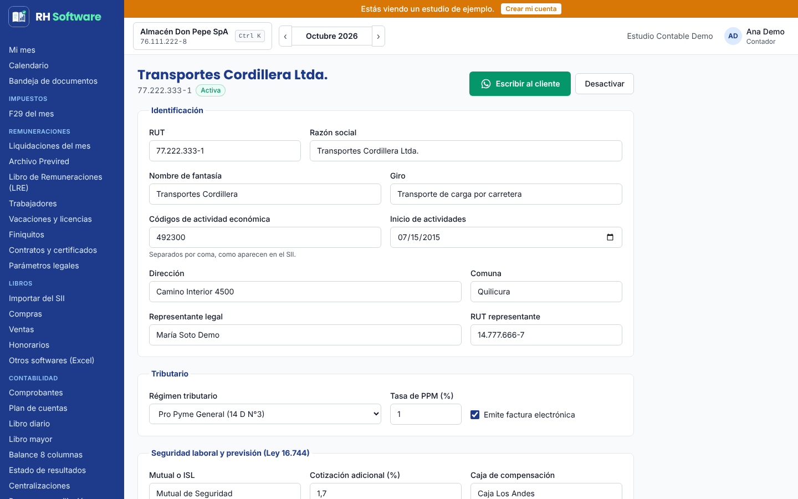
8 Usuarios y permisos: Luis es asistente solo de remuneraciones en 2 empresas; José Pérez es cliente del Almacén (portal).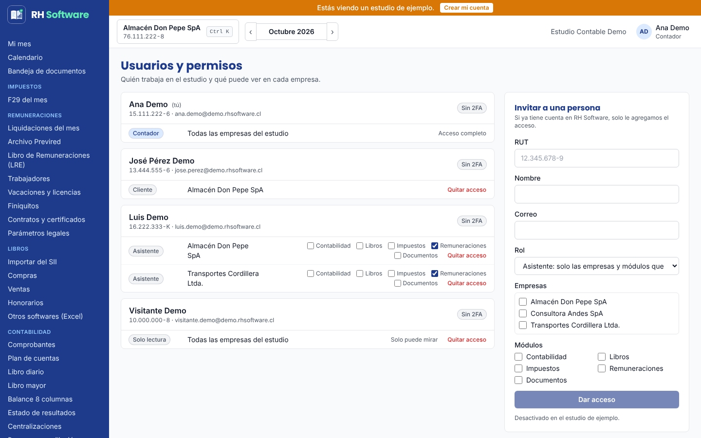
9 Auditoría: quién hizo qué, cuándo y desde dónde (IP y navegador). No se puede borrar.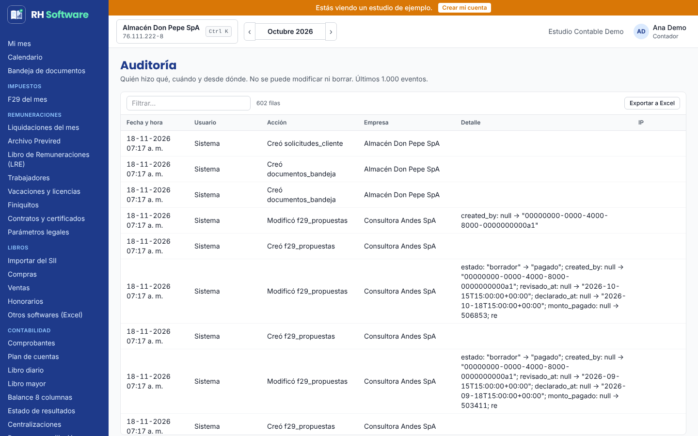
10 Seguridad de la cuenta: segundo factor con app autenticadora (obligatorio para contadores y asistentes; desactivado solo en el demo).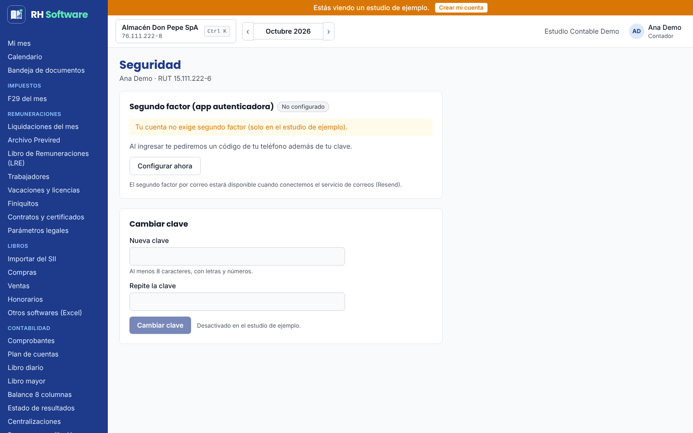
11 “Mis datos” (Ley 21.719): exportar los datos personales y pedir su eliminación.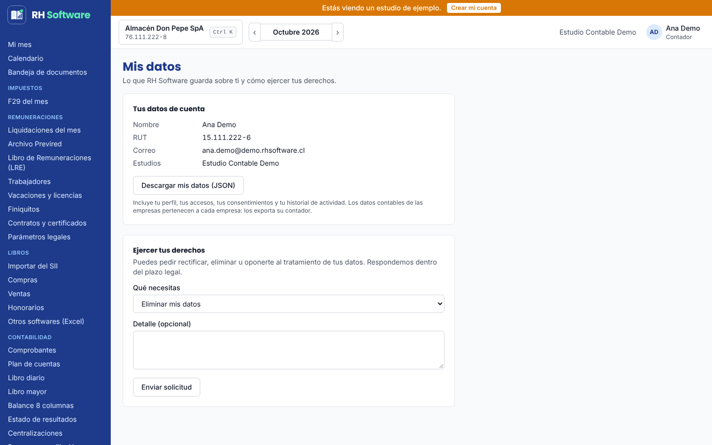
12 Luis (asistente) solo ve el menú de Remuneraciones y solo sus 2 empresas. La base de datos lo impide aunque intente entrar por otra dirección.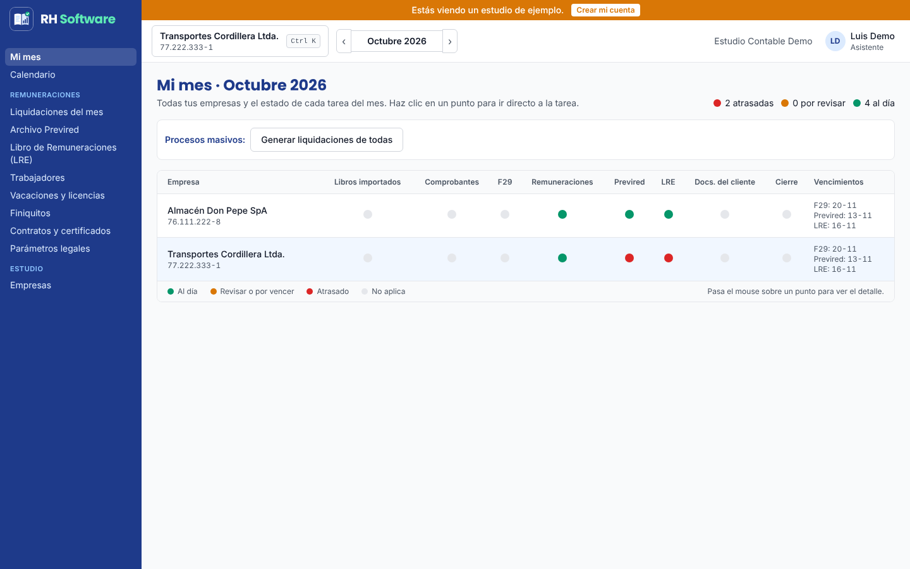
13 Botón “Ver demo” de la portada: entra al estudio de ejemplo en solo lectura, con la franja “Crear mi cuenta”.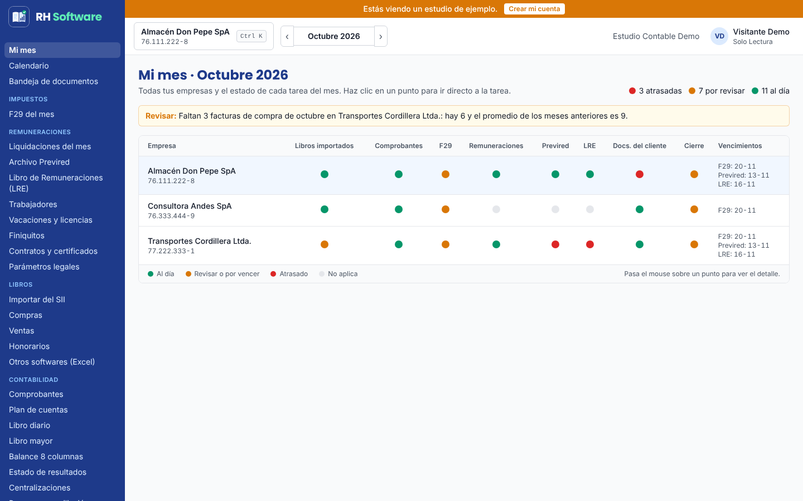
14 Política de privacidad (BORRADOR, revisar con abogado antes de publicar).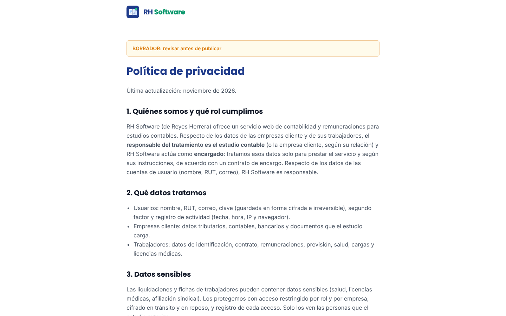
15 Términos de uso (BORRADOR): el contador revisa y responde por lo que declara.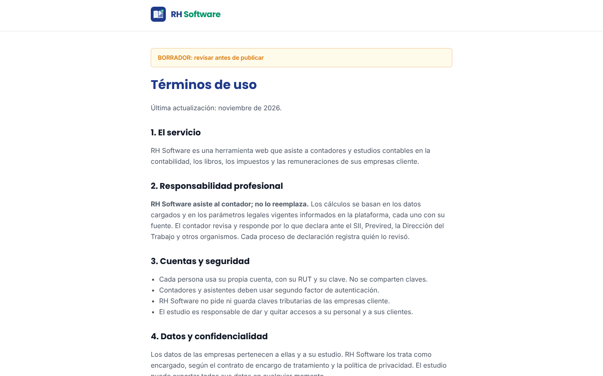
Qué debe verificar la socia contadora Que los roles calcen con cómo trabaja el estudio (contador, asistente por módulo, cliente).